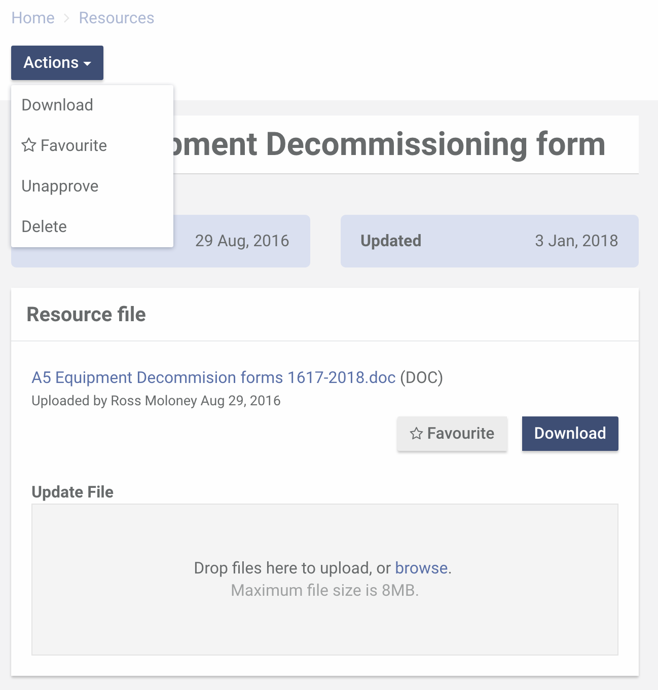

Click on the star icon to favourite a resource.
You'll find the "favourite" star icon in various places within the Resources section.
(1) At the top right corner of the resource card.

(2) In the "Actions" menu of the resource profile page.
(3) Next to the "Download" button on the resource profile page.
